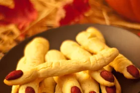

Spooky Witch Fingers

Ingredients
- 1 cup butter, softened
- 1 cup confectioners' sugar
- 1 egg
- 1 teaspoon almond extract
- 1 teaspoon vanilla extract
- 2 ⅔ cups all-purpose flour
- 1 teaspoon baking powder
- 1 teaspoon salt
- ¾ cup whole almonds
- 1 (.75 ounce) tube red decorating gel
Steps
- Combine the butter, sugar, egg, almond extract, and vanilla extract in a mixing bowl. Beat together with an electric mixer; gradually add the flour, baking powder, and salt, continually beating; refrigerate 20 to 30 minutes.
- Preheat oven to 325 degrees F (165 degrees C). Lightly grease baking sheets.
- Remove dough from refrigerator in small amounts. Scoop 1 heaping teaspoon at a time onto a piece of waxed paper. Use the waxed paper to roll the dough into a thin finger-shaped cookie. Press one almond into one end of each cookie to give the appearance of a long fingernail. Squeeze cookie near the tip and again near the center of each to give the impression of knuckles. You can also cut into the dough with a sharp knife at the same points to help give a more finger-like appearance. Arrange the shaped cookies on the baking sheets.
- Bake in the preheated oven until the cookies are slightly golden in color, 20 to 25 minutes.
- Remove the almond from the end of each cookie; squeeze a small amount of red decorating gel into the cavity; replace the almond to cause the gel to ooze out around the tip of the cookie.
Source: https://www.allrecipes.com/recipe/146819/spooky-witches-fingers/